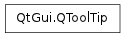

QToolTip ¶

Synopsis ¶
Detailed Description ¶
The PySide.QtGui.QToolTip class provides tool tips (balloon help) for any widget.
The tip is a short piece of text reminding the user of the widget’s function. It is drawn immediately below the given position in a distinctive black-on-yellow color combination. The tip can be any rich text formatted string.
Rich text displayed in a tool tip is implicitly word-wrapped unless specified differently with <p style='white-space:pre'> .
The simplest and most common way to set a widget’s tool tip is by calling its QWidget.setToolTip() function.
It is also possible to show different tool tips for different regions of a widget, by using a PySide.QtGui.QHelpEvent of type QEvent.ToolTip . Intercept the help event in your widget’s PySide.QtGui.QWidget.event() function and call QToolTip.showText() with the text you want to display. The Tooltips example illustrates this technique.
If you are calling QToolTip.hideText() , or QToolTip.showText() with an empty string, as a result of a ToolTip -event you should also call PySide.QtCore.QEvent.ignore() on the event, to signal that you don’t want to start any tooltip specific modes.
Note that, if you want to show tooltips in an item view, the model/view architecture provides functionality to set an item’s tool tip; e.g., the QTableWidgetItem.setToolTip() function. However, if you want to provide custom tool tips in an item view, you must intercept the help event in the QAbstractItemView.viewportEvent() function and handle it yourself.
The default tool tip color and font can be customized with PySide.QtGui.QToolTip.setPalette() and PySide.QtGui.QToolTip.setFont() . When a tooltip is currently on display, PySide.QtGui.QToolTip.isVisible() returns true and PySide.QtGui.QToolTip.text() the currently visible text.
Note
Tool tips use the inactive color group of PySide.QtGui.QPalette , because tool tips are not active windows.
See also
QWidget.toolTip QAction.toolTip Tool Tips Example
- static PySide.QtGui.QToolTip. font ( ) ¶
-
Return type: PySide.QtGui.QFont Returns the font used to render tooltips.
See also
- static PySide.QtGui.QToolTip. hideText ( ) ¶
-
Hides the tool tip. This is the same as calling PySide.QtGui.QToolTip.showText() with an empty string.
See also
- static PySide.QtGui.QToolTip. isVisible ( ) ¶
-
Return type: PySide.QtCore.bool Returns true if this tooltip is currently shown.
See also
- static PySide.QtGui.QToolTip. palette ( ) ¶
-
Return type: PySide.QtGui.QPalette Returns the palette used to render tooltips.
Note
Tool tips use the inactive color group of PySide.QtGui.QPalette , because tool tips are not active windows.
See also
- static PySide.QtGui.QToolTip. setFont ( arg__1 ) ¶
-
Parameters: arg__1 – PySide.QtGui.QFont Sets the font used to render tooltips.
See also
- static PySide.QtGui.QToolTip. setPalette ( arg__1 ) ¶
-
Parameters: arg__1 – PySide.QtGui.QPalette Sets the palette used to render tooltips.
Note
Tool tips use the inactive color group of PySide.QtGui.QPalette , because tool tips are not active windows.
See also
- static PySide.QtGui.QToolTip. showText ( pos , text , w , rect ) ¶
-
Parameters: - pos – PySide.QtCore.QPoint
- text – unicode
- w – PySide.QtGui.QWidget
- rect – PySide.QtCore.QRect
Shows text as a tool tip, with the global position pos as the point of interest. The tool tip will be shown with a platform specific offset from this point of interest.
If you specify a non-empty rect the tip will be hidden as soon as you move your cursor out of this area.
The rect is in the coordinates of the widget you specify with w . If the rect is not empty you must specify a widget. Otherwise this argument can be 0 but it is used to determine the appropriate screen on multi-head systems.
If text is empty the tool tip is hidden. If the text is the same as the currently shown tooltip, the tip will not move. You can force moving by first hiding the tip with an empty text, and then showing the new tip at the new position.
- static PySide.QtGui.QToolTip. showText ( pos , text [ , w=None ] )
-
Parameters: - pos – PySide.QtCore.QPoint
- text – unicode
- w – PySide.QtGui.QWidget
This is an overloaded function.
This is analogous to calling QToolTip::showText( pos , text , w , QRect() )
- static PySide.QtGui.QToolTip. text ( ) ¶
-
Return type: unicode Returns the tooltip text, if a tooltip is visible, or an empty string if a tooltip is not visible.